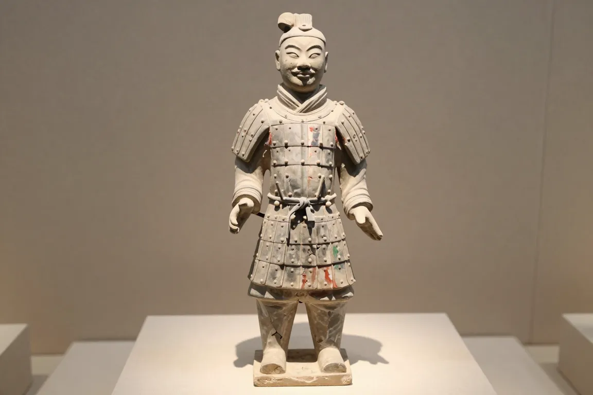

керамика · 221–206 BC · также: Терракотовая армия, Фигуры гробницы Цинь, Бинмаюн
Серые терракотовые солдаты, лошади и чиновники в натуральную величину, которых мастерские Первого императора сделали для его гробницы. Каждое тело собирают из стандартных частей, а голову доделывают вручную.

Главная идея
Император берёт в могилу армию из глины, а фабричная система стандартных частей и ручной отделки делает каждого солдата другим человеком.
Принципы дизайна
Делайте каждую фигуру в натуральную величину: 175–190 см для солдата и до 200 см для генерала.
Стройте ноги как сплошные колонны, а торс как полую трубу, слепленную жгутами, затем соединяйте части ангобом.
Прессуйте голову в двухчастной форме и добавляйте уши, нос, волосы и бороду вручную на кожетвёрдую глину.
Давайте каждому лицу свой рот, бровь и усы, чтобы ни две головы не совпадали.
Закладывайте ранг в одежду: генерал носит доспех с завязанным бантом и высокую шапку, а лучник стоит на колене.
Обжигайте серый черепок в восстановлении при 950–1050 °C и оставляйте без глазури.
Расписывайте обожжённую фигуру лаком и минеральными пигментами красного, зелёного, фиолетового и синего цвета.
Штампуйте или врезайте на теле название мастерской и мастера как запись о том, кто сделал.
Антипаттерны
Глянцевая свинцовая глазурь по всей фигуре
Одно лицо из формы, повторяющееся на каждом солдате
Маленькая настольная фигурка вдвое меньше или меньше
Белый фарфоровый черепок с тонкой эмалевой росписью